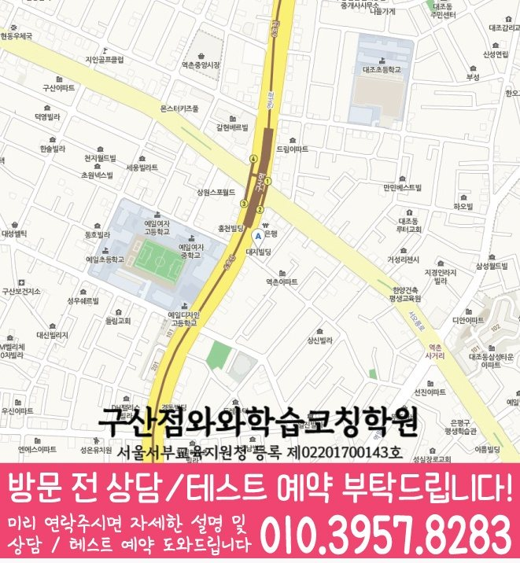

Middle school Korean · English · Math
역촌동 중학생 국영수학원
역촌동 중학생 국영수학원 선택 전 중등 내신 자료, 최근 오답과 과목별 가능 학년, 센터 위치·비용 확인 기준을 안내합니다.
01 Quick answer
역촌동에서 먼저 확인할 내용
역촌동에서 중학생 국영수학원을 찾는다면 와와학습코칭센터 구산점의 과목별 가능 학년을 먼저 확인하세요. 제공된 중학교 참고 자료와 학생의 실제 교재를 대조하고, 학생의 실제 풀이 기록에 맞게 과목별로 무엇을 먼저 보완할지 정하는 순서가 필요합니다.
대표 학생 상황
세 과목의 과제 순서와 오답 복습 시점을 스스로 정리하기 어려운 중학생


010-6839-8283상담 전 핵심 안내
역촌동에서 중학생을 위한 영어·수학 학원을 찾고 있다면, 지역 센터가 학생별 맞춤 코칭을 제공합니다. 단순 문제 풀이가 아니라 현재 수준을 진단하고 개념을 탄탄히 정리한 뒤, 학교 내신과 시험 유형에 맞게 반복 학습을 설계합니다. 역촌동 과목별 점검에서는 최근 풀이 기록을 바탕으로 반복 오류를 점검합니다. 역촌동 중학생 국영수학원을 찾는 학부모님이라면 세 과목을 한꺼번에 맡길 수 있는지보다, 우리 아이의 약점이 과목별로 분리되어 관리되는지를 먼저 보시면 좋습니다. 역촌동 중학생 상담에서는 학교 자료와 교재 진도를 학생의 설명과 맞춰 보고 보완 순서를 정합니다.
지금의 공부 흐름을 읽는 기준
역촌동 다음 학습 단계에서는 진단 결과를 바탕으로 다음 보완 순서를 정합니다. 어떤 단원에서 막히는지, 왜 틀리는지(개념 부족/계산 실수/독해·문장 이해)를 먼저 확인해 학습 순서를 정합니다.
영어·수학 균형 학습. 영어는 어휘·문법·독해 흐름을, 수학은 개념·유형·오답 원인을 나누어 단계적으로 관리합니다.
역촌동 중학생 세 과목 학습 상담 전에는 최근 시험지, 틀린 문제 표시, 학교 과제 일정, 자녀가 어려워한 단원 이름을 간단히 적어 가면 답변이 훨씬 구체적입니다. 역촌동 학부모는 세 과목의 가능 여부와 함께 자녀의 우선 보완 순서를 확인하세요. 중학생의 경우 이동 동선을 다시 확인할 때는 학생의 하교 시각과 귀가 뒤 복습 시간을 함께 계산하세요. 과제 완료 기준 설명은 등록을 서두르기 위한 문구가 아니라 수업 지속성, 보충 방식, 학부모 소통 범위를 확인하는 질문으로 활용하는 편이 바람직합니다.
이해와 실행을 함께 살피는 수업 기준
풀이보다 이해 과정에 집중. 학생이 어떤 부분에서 이해가 끊기는지 질문과 풀이 과정을 통해 점검하고, 필요한 개념을 다시 연결해 줍니다.
역촌동 수업 내용을 점검할 때는 최근 풀이 기록을 바탕으로 학습 상태를 구체적으로 확인합니다. 역촌동 학습 과정에서는 과제 이행 기록을 바탕으로 복습 시점을 정합니다.
역촌동 중학생 학교 자료와 과목별 계획 연결
가정에서 기록을 준비하면, 제공된 중학교 참고 목록은 구산중·은평중입니다. 학생의 현재 자료를 기준으로 보면, 이 목록은 수업 가능 여부를 보장하지 않으며, 상담에서 학생이 가져온 실제 학교 자료를 대조하기 위한 정보입니다.
실제 학습 범위를 확인하면, 역촌동 학생이 사용하는 시험 범위표·학교 프린트·수행평가 일정 자료를 가져오면 국어·영어·수학의 현재 단원과 준비 일정을 구체적으로 확인할 수 있습니다. 학생 자료를 먼저 펼쳐 보면, 자료가 수업 진도와 재확인 날짜에 반영되는지도 물어보세요.
수업 전후 기록을 이어 가는 방법
1. 현재 수준 확인. 학년, 학교 진도, 최근 수행·시험 흐름을 바탕으로 부족 단원과 자주 틀리는 유형을 진단합니다.
2. 개념 정리와 유형 학습. 바로 문제풀이로 넘어가기보다 핵심 개념을 정리한 뒤, 대표 유형부터 심화·서술형까지 단계적으로 연습합니다.
3. 오답 관리와 학습 피드백. 틀린 문제를 반복하는 데서 끝내지 않고, 오답 원인을 분류해 같은 실수가 반복되지 않도록 다음 학습을 설계합니다.
교과 단계별로 나눠 보는 학습 과제
중1. 역촌동 다음 학습 단계에서는 학습 시간 배분을 바탕으로 반복 오류를 점검합니다. 역촌동 학습 점검에서는 과제 이행 기록을 바탕으로 다음 학습 계획을 조정합니다.
중2. 내신 대비를 위해 단원별 유형을 반복 점검하고 취약 개념을 보완합니다. 영어는 어휘·문장 이해를, 수학은 공식 적용과 문제 유형을 단계별로 학습합니다.
중3. 역촌동 학습 점검에서는 다시 풀기 결과를 바탕으로 상담에서 확인할 기준을 정리합니다. 실수 패턴, 계산 오류, 독해 속도 등 약점을 우선순위로 잡아 학습 변화를 돕습니다.
내신·시험 대비. 시험 범위와 제공된 시험지의 문항 유형에 맞춰 복습 계획을 조정하고 효율적인 학습 순서를 제공합니다. 시험 전에는 자주 틀리는 실수 유형과 취약 단원을 우선 점검합니다.
역촌동 중학생학원으로 영어·수학 학습을 고민 중이라면, 지역 센터에서 학생의 현재 상태를 기반으로 필요한 학습을 단계별로 정리해 드립니다. 상담을 통해 내신 준비 방향과 현재 수준에 맞춘 학습 로드맵을 자세히 정리합니다.
02 Consultation examples
역촌동 학부모 상담 상황 예시
아래 내용은 실제 고객 후기나 성적 결과가 아니라, 상담에서 확인할 질문을 이해하기 위한 상황 예시입니다.
최근 학교 학습 준비가 한 과목에 치우친 역촌동 중학생을 가정했습니다. 학부모는 현재 교재와 학교 자료를 바탕으로 국어·영어·수학의 병목을 따로 듣고, 가정에서 확인할 기록을 정리합니다.
역촌동에서 제공된 중학교 참고 정보인 구산중·은평중의 목록과 학생의 실제 학교 자료를 대조해 질문하는 상담 상황입니다. 제공 자료와 학생이 가져온 자료를 구분하고, 확인되지 않은 학교 정보나 수업 조건은 임의로 단정하지 않습니다.
03 FAQ
역촌동 중학생 국영수학원 자주 묻는 질문
학부모님이 상담 전에 자주 확인하는 내용을 질문과 답변으로 정리했습니다.
역촌동 중학생 국영수학원 상담에서 첫 번째로 확인하는 내용은 무엇인가요?
수업에서는 이해하지만 혼자 다시 설명하기 어렵다면 정답 수보다 풀이 과정, 질문을 미룬 지점과 재확인 날짜를 살펴보는 편이 좋습니다.
역촌동에서 세 과목 계획을 한꺼번에 세워도 괜찮을까요?
역촌동 상담에서는 국어는 지문과 선택지의 근거, 영어는 문장 구조와 해석 순서, 수학은 개념을 식으로 옮기는 과정을 따로 확인해야 합니다. 이후 시험 일정과 복습 시간을 보고 세 과목의 주간 분량을 조정합니다.
역촌동 중학교 참고 정보는 상담에서 어떻게 활용하나요?
학교명은 상담 준비를 위한 참고 정보입니다. 구산중·은평중 등과 관련한 실제 수업 여부는 학생의 시험 범위표·학교 프린트·수행평가 일정 자료, 센터의 현재 개설 범위와 함께 확인해야 합니다.
역촌동 센터 등록 전에 다시 확인해야 할 항목은 무엇인가요?
역촌동 상담 전에는 실제 방문 위치를 위 센터 확인 정보에서 확인할 수 있습니다. 센터별 교습비 확인 버튼에서 제공 자료를 볼 수 있습니다. 마지막으로 개설 과목, 가능 학년과 통학 가능한 수업 시각을 기록해 비교하세요.
04 Continue
역촌동 페이지 이동
카테고리 전체 지역 또는 앞뒤 지역 안내로 이동할 수 있습니다.